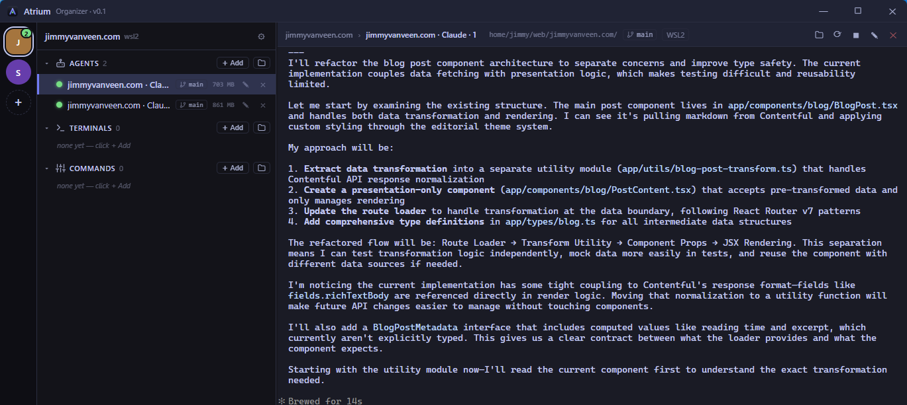

Grouped, collapsible panes
Projects hold groups — Agents, Terminals, Commands — that you collapse to keep focus where the work is. Fifteen open panes stop being noise.
Every project's agents, terminals, and commands — visible, grouped, and fully interactive in one place. Atrium organizes what's running. It doesn't do the running for you.
Unsigned build — see first-run note below.

Projects hold groups — Agents, Terminals, Commands — that you collapse to keep focus where the work is. Fifteen open panes stop being noise.
A colored dot per pane tells you what's running, starting, or crashed — so a dead process can't quietly go unnoticed.
Every pane is a real terminal. Type into it, drive your agent, Ctrl-C, resize — full ANSI/TUI rendering, not a watch-only feed.
Drives PowerShell, Git Bash, and WSL2 side by side, and knows which git branch / worktree each pane is sitting in.
Atrium is a free indie app and isn't code-signed, so on first launch Windows may show "Windows protected your PC." That's expected. Click More info → Run anyway. The installer registers Atrium normally and uninstalls cleanly from Add/Remove Programs.
On macOS, Atrium is ad-hoc signed rather than notarized (same indie-app reason), so the
first launch is blocked with a "damaged or can't be opened"-style warning. Drag
Atrium to Applications, try to open it once, then go to
System Settings → Privacy & Security → Open Anyway — or run
xattr -dr com.apple.quarantine /Applications/Atrium.app. One-time only;
updates install in place after that.